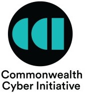
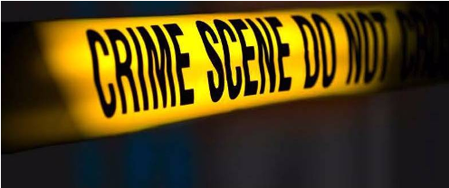
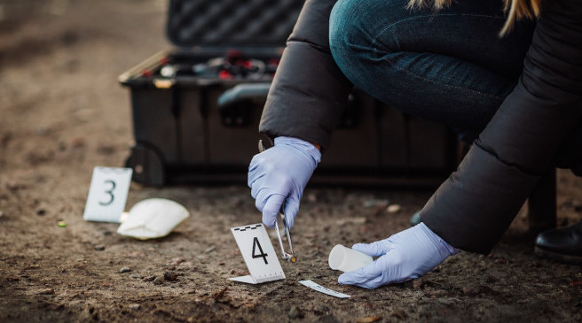

Cyber4n6: Digital Forensics Experiential Learning Program with Virginia State Police
Host Institution:
Virginia Commonwealth University (VCU)
Department of Computer Science,
College of Engineering,
Richmond, VA - 23284

Contact Us:
- Send an email to Dr. Irfan Ahmed if you have any questions.
Include Cyber4n6 in the subject.
- Email: iahmed3 at vcu dot edu
Funded by:
The Commonwealth Cyber Initiative (CCI)
Apply for the Cyber4n6 Program
Please submit this Google form --> https://forms.gle/YPPjuqrT3sx5uQg89
Program Overview
- Purpose: Cyber4n6 is an industry-focused experiential learning program in digital forensics in direct partnership with the Computer Evidence Recovery Section (CERS) at Virginia State Police.
- Program Tracks:
- Forensic Investigator, and
- Forensic Tool Developer.
- Program Size: 10 Students in total for both tracks
- Target Students: Undergraduate junior and senior levels, and graduate students currently enrolled in a master's program within Virginia.
- Discipline Requirement: Computer Science (CS), Computer Engineering (CE), and other relevant disciplines.
- Average GPA Requirement: 2.8 or above for undergraduates, and 3.2 or above for master's students.
- Program Duration: 1 year (Fall, Spring, and Summer semesters).
- Participants' Time Commitment: 10 hours per week.
- Stipend Rate: $15 per hour.
- Program Locations: Richmond, VA. Specifically,
- Security and Forensics Engineering (SAFE) Lab at VCU, and
- Computer Evidence Recovery Section (CERS) at Virginia State Police
- Program Learning Mode: In Person.
Note: Participants must be able to commute to Richmond VA to complete weekly hours. - Commuting Support: An additional $50 per month will be provided to partially cover the commuting expense if the distance between VCU and a participant's undergrad/master's program institute is over 60 miles.
- U.S. Citizenship Requirement: The participants must be U.S. citizen, or permanent resident (green card holder) of the United States.
- Background and Security Check: The participants must pass a standard background and security check to allow access to the CERS lab.
Benefits for the Participants
- Industry collaboration with Virginia State Police to solve cybercrime cases and develop new forensic capabilities.
- One year paid internship in cybersecurity for research and development.
- Longer term program duration (1 year) to provide enough time to the participants to develop industry-focused skillset in cybersecurity.
- Receive a certificate of program completion from Virginia State Police.
- Participation in a poster competition to showcase your knowledge and experience to industry representatives.
Important Dates
| Application Deadline: | September 09, 2022 |
| Notification Date: | September 23, 2022 |
| Program Start Date (Expected): | January 15, 2023 |
| Program End Date (Expected): | December 15, 2023 |
Cyber4n6 Program Details
Introduction
 Digital forensics revolves around the definition of forensics as “science serving the law”. The technical skills in this area are in high demand in industry and government. With the continuous challenge that cyber-crime presents to the U.S. industry, many corporations are interested in a workforce equipped with digital forensics skills. The NIST cyberseek tool identifies cyber-crime analyst as one of the four entry-level roles, leading to three mid-level roles of cybersecurity analyst, cybersecurity consultant, and penetration and vulnerability tester.
Cyber4n6 is an industry-focused experiential learning program in digital forensics in direct partnership with the Computer Evidence Recovery Section (CERS) at Virginia State Police (VSP). The CERS is a section of the High Tech Crimes Division established in 2009 to fight against computer crimes.
Cyber4n6 program has two tracks:
- Investigator track to explore practical skills for solving cybercrime cases, and
- Developer track to create new tools to add missing forensic capabilities.
Program Implementation
- Compliance with VSP policies. Cyber4n6 program will comply with VSP policies and requirements.
- Program size. The program will consist of 10 students per year recruited within Virginia.
- Program duration. Almost 12 months to learn the practical skillset of forensic investigation and be useful for the CERS lab. 
- Participants’ stipend and time commitment. The participants will commit 10 hours per week for almost one year. They will be paid $15 per hour. VSP and VCU will maintain their timesheet and periodically inform the Cyber4n6 team about the students’ lack of commitment, interest, and other issues. The team will intervene and resolve the problems to help the students be back on track.
- Student commute and time management. The students will split 10 hours into two days a week to save their commute time and make their visits to the CERS lab and VCU's SAFE lab more productive.
- Participant recruitment. The program will open to all undergraduate junior/senior and graduate students of computer science, computer engineering, and other relevant programs within Virginia. Undergrads must have a minimum GPA of 2.8, while master's students must have a GPA of 3.2 or above. The ideal candidates must also have demonstrated interest in cybersecurity, e.g., participated in capture-the-flag (CTF) competitions, involved with a cybersecurity club at their universities, etc.
- VSP certificate of completion. VSP will issue a completion certificate to successful participants.
Other Program Activities
- Knowledge sharing sessions. The program will have regular knowledge-sharing sessions in a hybrid mode, both Zoom and in person at VCU, to encourage students to share their knowledge, new skills, and experiences with other participants.
- Poster competition. The students will participate in a poster competition at the end of the program, reflecting students’ acquired knowledge and experience. Industry representatives will also be invited. Top three posters will receive an award certificate and a gift.